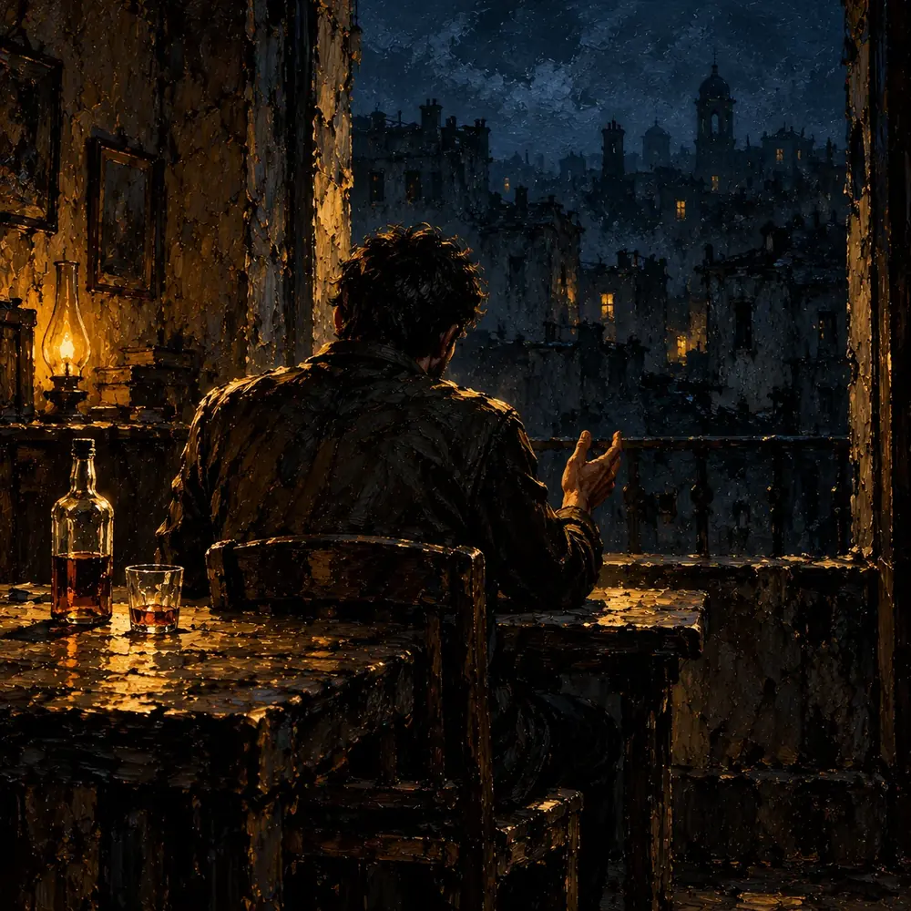

مونولوگ
سهیل آقایانی
«بعضی شبها هست که یههو کاری میکنم که آخرش خودم ناراحت میشم. کاری که اعصاب بقیه هم ازش خرد میشه. مخصوصاً وقتی طرف مقابلم کسی باشه که دوستش دارم، اونوقت یه حسی شبیه گریه توی وجودم بالا میاد. حس میکنم تو اون لحظه بیشتر از هر چیزی به یه آغوش امن نیاز دارم. «بهنظرت من یه آدم احمقم؟» این سؤالیه که هزار بار از خودم پرسیدم. سؤالی که هیچوقت جوابی براش پیدا نکردم که قانعم کنه دیگه نپرسمش. یه جملهی معروف هست که میگه: «برای اینکه بفهمی احمقی، باید به نسبتی باهوش باشی.» بهنظرم جملهی جالبیه. میارزه آدم بهش فکر کنه.»
«ممکنه تو بخوای بهم بگی: «نه، تو احمق نیستی. همهی آدما اشتباه میکنن.» اون جملهی معروف دیگه هم هست: انسان جایزالخطاست. ولی کسی نمیگه دقیقاً چه نوع خطایی جایزه. قاعدتاً میتونی یه نفر رو به اشتباه بکشونی، اما این اشتباهیه که با یه جملهی ساده مثل «انسان جایزالخطاست» نمیشه ازش گذشت. یه سری اشتباهها عواقب دارن. اصلاً کسی هست که بیاد بگه کدوم خطاها «جایز» محسوب میشن؟ قانون یهجاهایی کمک میکنه، ولی برای چیزهایی که توی حوزهی قانون نیست چی؟ مثلاً یه گفتوگوی سخت دربارهی یه موضوع تلخ. اونجا چی؟»
«میدونی... بهنظرم بعضی وقتا لازمه بذاری یه ساختمون بریزه. مثل وقتی که احساساتت فوران میکنن. اون لحظههایی که میبینی چطوری احساس گناه خفهت کرده و چطوری یه شب آروم رو تبدیل کردی به شبی دردناک. بهنظرم بد نیست بذاری اون احساسات فرو بپاشن. بذاری تخریب اتفاق بیفته. بذاری یه بخش ازت نابود بشه. راستش، اگه نتیجهی این کار خیلی فاجعهبار بود، من الان اینجا نبودم. نمینشستم که بنویسم.»
«اما این فروپاشی یه فروپاشی ساده نیست. توی حالت عادی، استرس عامل اصلی فروپاشی احساسیه. بعدش ناراحتی میاد. معمولاً وقتی کسی رو از دست میدیم. اما وقتی فروپاشی احساسی با ترس قاطی میشه، چی میشه؟ وقتی ناراحتی و ترس با هم ترکیب میشن؟ خب، اون یه قلمرو جدیده. و چیزای جدید معمولاً هم ترسناکن و هم وسوسهبرانگیز. میتونن آدمو بکشن، یا یه دلیل برای زندگی بهش بدن. تنها چیزی که مهمه اینه که فقط ادامه بدی.»
«البته اگه بخوام پیامی به خودم بدم، اینه که: همیشه هم لازم نیست ادامه بدی. گاهی فقط همین که بخوابی کافیه. همین خواب رو هم تا تهش ادامه بده. میبینی؟ شدم شبیه آدمای مست. یه بطری دستمه و حس میکنم اومدم سخنرانی کنم. جالبه که مخاطبم رو هم نمیتونم ببینم. اینقدر که همهجا تاریکه. البته شاید خودمم که درونم خاموشه. اگه واقعاً این درونمه، انتظار داشتم یه کم شلوغتر باشه.»
«آهان! داشت یادم میرفت... ته این حرفا چیه؟ راستش... نمیدونم. برداشتش با هر کسیه که میخواد گوش بده. من فقط یه آدم احمقم که آخرش خودشو ناراحت میکنه و اعصاب بقیه رو خرد.»